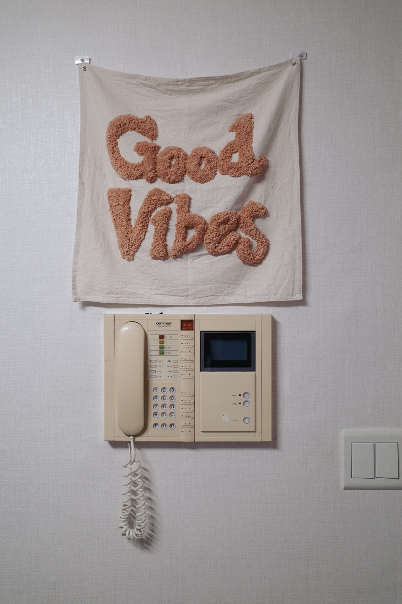

G-ARCH PROJECT

용씨를 오래 봐왔지만, 자기 얘기를 많이 하는 편은 아니잖아요. 어떤 사람인지 늘 궁금했어요. 오늘 같이 여러 이야기를 해보려고 하는데, 먼저 어린 시절에는 어떤 사람이었는지 알려주세요.
중학교 올라가기 전까지는 초등학교 되게 장난기도 많고 그러니까 친구들 앞에 나서서 웃기기도 되게 좋아했어요. 지금이랑 다르게 나대는 걸 엄청 좋아했었고, 관심받는 것도 꽤 좋아했어요.
지금과는 많이 다르네요.
맞아요. 근데 고학년 때 학교 근처 후미진 곳을 지나가다가 제 욕이 쓰여 있는 걸 본 거죠. 그거에 너무 충격을 상처를 받았어요. 그래서 그때 이후로 조금씩 저를 좀 감추기 시작한 것 같아요.
나대기 좋아하는 사람들은 누구나 비슷한 경험이 있을 것 같은데, 그럼에도 불구하고 계속 나대는 사람도 있잖아요.
맞아요. 근데 그게 제 기질인 것 같아요. 상처받기 되게 싫어하는.
그럼 상처를 받지 않기 위해서 조금 덜 나대게 된 거네요.
사실 막 한순간에 확 바뀐 건 아니고, 서서히 사춘기를 지나면서 그런 게 없어진 것 같아요.
어릴 적에 대해 물어본 사전 질문에 수줍은 관종이라고 얘기를 했어요. 좀 전에도 이야기했지만 지금 모습만 봐서는 잘 상상이 안 돼요. 관심을 받고 싶어서 했던 행동이 있나요?
초등학교 때 소풍 같은 거 가면은 이제 막 장기 자랑 다들 준비하잖아요. 그러면은 항상 친구들이랑 조를 짜서 코요테나 유피 춤을 연습해서 췄어요.
코요테와 유피. 너무 평범한 노래네요. 저는 수련회에서 성인식을 췄는데.
그 정도로 용기가 있었던 것 같진 않아요.
그거 말고는 뭐 더 관심 받기 위해서 했던 건 없어요?
그거 말고는 없었어요. 그냥 되게 까불거리고 엄청 까불거렸었어요.
친구들을 놀리는 걸 좋아했나요?
놀리는 것보다는 친구들을 웃기고 싶은 그런 게 있었어요.
그럼 중고등학교 때는요?
사춘기 오고 나서부터는 진짜 조용해졌어요. 엄청 내성적으로 성격이 진짜 확 바뀌었어요.
그렇군요. 그럼 건축과에 진학한 계기는 뭐에요?
사실 제품디자인을 해보고 싶었어요. 제가 초등학교 때 동경했던 친구가 제품 디자인 쪽을 준비한다고 들었던 것 같아요. 그 친구가 전학을 갔는데 디자인 쪽으로 진학을 희망하고 있고, 제품 디자인과로 가려고 한다는 얘기를 들었거든요.
첫사랑인가요?
첫사랑은 아니에요. 그건 아니에요. 초등학교 때라서 그냥 첫사랑까지는 아니고 되게 멋있는 애였어요. 근데 디자인이 뭔가 멋있어 보이고 나랑 성향도 잘 맞을 것 같고 그래서 디자인을 하려고 했어요. 디자인을 하려면 입시 미술을 해야하니까 고1 때 엄마한테 디자인 전공을 하고 싶다 말했어요. 근데 엄마가 내 성향을 보고서 너는 디자인이랑 정말 잘 안 어울린다고 엄청 반대했었어요. 디자인은 절대 안 된다고 그래서 타협을 본 게 건축이었어요.
어머니는 어떤 성향을 보고 그렇게 말씀하셨을까요?
약간 제가 고지식하고 생각이 말랑말랑하지 않다고요.
고집이 세고, 하던 대로 하고?
맞아요. 또 성격이 과감하지 않아서 제 성격이랑은 안 맞는다고요.
그런데 그렇게 생각하면 건축과도 쉽지 않을 텐데요.
맞아요. 근데 엄마는 건축이 상대적으로 더 기술직이고 장래를 생각했을 때 더 낫다 생각하셔서 타협을 본 게 건축과에요.

그러면 대학교를 지원하고 들어갈 때도 건축 자체가 좋았던 건 아니겠네요?
건축에 대해서 잘 몰랐어요. 1학년 때까지는 제대로 된 건축보다는 조형 수업을 주로 했었거든요. 그때 엄마가 한 말이 어떤 의미인지 알았어요. 그러니까 말랑말랑하지 않다는 게 제가 생각한 디자인을 안을 가지고 가면은 교수님께 까이잖아요. 그러면 조금 변형을 해서 가야 되는데 그게 잘 안되는 거에요. 피드백을 받아서 내 걸 발전시키고 해야 하는데 진도가 잘 안 나가는 거죠.
매주 피드백을 받고도 너무 꽂혀 있어서 될 때까지 똑같은 걸 밀고 나가는 그런 스타일이 있죠.
맞아요. 그래서 건축이랑 나랑은 좀 안 맞는다고 저학년 때부터 생각을 했었어요.
일찍 생각한 편이네요.
그래서 친구들도 제가 설계를 한다고 했을 때 놀랐어요. 다들 제가 설계 안 할 거라고 생각했었고, 저도 설계는 나랑 안 맞는다고 생각을 했었거든요.
그러면 대학교 때는 설계보다는 다른 수업을 더 좋아했어요?
저는 교양수업 중에 철학 수업이나 아니면 미학 수업 이런 걸 좋아했어요.
전공수업보다는 교양수업을 더 좋아했던 거네요. 그중에 기억나는 수업이 있어요?
영화와 철학이라는 수업인데, 수업에서 매주 보는 영화가 달랐었거든요. 한번은 매트릭스를 가지고 시뮬라크르, 시뮬라시옹이라는 개념을 이야기해 주셨어요. 그러니까 실재하지 않는 세상이 뭔가 실재하는 세상처럼 꾸며진 매트릭스의 이야기와 이 개념이 맞닿아 있다는 그런 내용으로 진행됐던 수업이었어요. 제가 중학교 때는 구운몽을 엄청 좋아했는데, 사춘기 때 수업을 듣다가 혼자서 엄청 진지해진 적이 있거든요. 내가 지금 살아가고 있는 이 세상이 실제가 아닐 수 있겠다 꿈일 수 있다. 그래서 그때 이후로 계속 뭔가 종종 이런 생각을 했었거든요. 근데 대학 수업에서도 비슷한 얘기를 하니까 내 생각이 정말 맞을 수도 있겠다 싶었죠.
상상하기를 되게 좋아하는 편인 것 같아요.
맞아요. 저는 현실적인 얘기보다는 조금 개념적이면서 뜬구름 잡더라도 그런 걸 생각해 보는 걸 좋아하고 재밌어해요. 혼자서 공상 할 수 있는 그런 얘기들을 좋아해요.
졸업하고서는 설계를 바로 한 게 아니고 공간 기획일을 했다고 들었어요.
제가 설계 쪽에는 너무 자신이 없으니까, 설계사무소에는 선뜻 지원을 하기가 힘들었어요. 내가 잘하는 게 뭔지 생각해 봤을 때, 결과물들은 잘 못 만들어내지만, 결과물을 만들어내기 위해서 방향성을 잡는 콘셉트를 잡고, 아이디어 내는 과정을 되게 재밌어 하고, 나름대로 괜찮게 한다고 생각했어요. 그런 일이 있으면 그런 쪽으로 일하고 싶다는 막연한 생각이 있었는데, 채용 공고를 찾다가 제가 생각하고 있는 그런 공고가 뜬 거죠.
공간 기획이라는 게 건물 초기 기획을 한다는 건가요? 굉장히 많은 걸 기획이라는 단어 안에 넣긴 하잖아요. 기획을 한다고 하는 곳들이 하는 일이 서로 완전히 다르기도 하고요. 자세히 어떤 일을 했는지 궁금해요.
제가 했던 일은 상업 공간을 주로 했었고, 의뢰가 오면 디자인 컨셉을 잡아주는 그런 프로젝트들이 많았어요.
그러면 클라이언트들은 자기가 회사를 하고 있거나 창업하려는 개인인가요?
아니요. 주로 시행사 쪽에서 연락이 왔었는데, 쇼핑몰을 계획하려고 하는데 여기에 배치 콘셉트랑 입면 콘셉트를 잡아달라 이런 식으로 의뢰가 왔어요.
그럼 디자인은 안 하지만 디자인 컨셉까지는 잡아준 거네요.
맞아요. 우리가 디자인 컨셉을 잡으면 그걸 가지고서 설계사무소에 가서 디자인을 디벨롭시켜서 설계를 하는거죠. 그리고 거기에 들어가는 테넌트(임차인)를 제안하고요.
디자인 컨셉에 맞춰서 요즘 유행을 하는 테넌트나 앵커가 될 만한 테넌트들을 소개해주는 일까지 한 거네요?
맞아요.
쇼핑몰이라고 하면 규모가 있는 클라이언트와 일을 많이 한 것 같은데, 그럼 용씨가 다닌 회사는 규모가 얼마나 됐어요?
되게 작았어요. 디자인 회사랑 공간 기획회사랑 같이 있었는데, 공간 기획팀에는 이사랑 직원 둘 셋 있었어요.
하나의 팀 정도로 움직이는 회사인데 큰 클라이언트와 일을 했다는 거는 기존에 그런 실적들이 좀 있었나 봐요.
회사가 다른 데서 갈라져서 나오긴 했는데, 그 갈라져 나오기 전에 대표님이 수완이 되게 좋았었던 것 같아요.
그러게요. 쇼핑몰을 하는 큰 시행사 같은 경우에는 아예 자체적으로 그런 공간 기획을 하는 팀을 자기 회사 안에 넣기도 하는데 그렇지 않고 외주를 줬다는게... 거기는 얼마나 다녔어요?
1년 반이요.
꽤 오래 다녔네요. 그만둔 이유는 뭐에요?
사실 거기 있으면서 너무 지쳐 있었어요. 매일 야근을 했고, 업무량이 너무 많았어요. 그리고 다른 데는 어떤지 모르겠는데 그 회사가 그렇게 막 전문적이지 않았거든요. 제시해 주는 것도 그렇고 컨셉을 잡는다고는 하지만 체계적이지 않았어요. 그래서 페이퍼웍에서 끝나버리는 일들이 많아지고, 약간 현타도 오고요. 그리고 어쨌든 내가 건축을 전공했으니까 디자인된 건물을 봤을 때 나도 한 번쯤은 저런 멋진 작업 해보고 싶다는 동경이 있었어요.
기획만 하다 보면, 기획이 실제로 디자인까지 디벨롭 되지 않은 경우도 꽤 있었을 거고, 아이디어를 결과물까지 가져가는 걸 한 번 해보고 싶었지 않았을까 그런 생각도 좀 들긴 하네요.
그다음 회사를 지원할 때, 면접에서 그런 얘기를 했던 것 같아요.
설계사무소도 몇 번 옮겼던 걸로 알아요. 몇 군데를 다녔어요?
세 군데 다녔어요. 사실 저는 원래 처음부터 아뜰리에를 가보고 싶었거든요. 근데 1년 반을 건축이 아닌 데 있으니까 내가 실력이 안 된다는 생각 때문에 뭔가 디자인하는 사무실로는 선뜻 지원을 못하겠더라고요.
일단 해봤어야 되는데 말이죠.
그랬으면 더 일찍 뭔가 결론이 나왔을 것 같아요.
그래서 그럼 첫 번째로 간 설계사무소는 어떤 곳이었어요?
현상 설계 위주로 하는 사무실이었어요. 거기 10개월 있었는데, 한 달에 하나씩 현상을 했어요.
현상만 하는 사무실은 기획 회사처럼 현상만 하고 건축물이 지어지는 건 끝까지 못 보잖아요.
맞아요. 근데 거기도 나름 재밌긴 했는데 일이 빡셌어요.
어떤 게 재밌었어요?
보고서 쓰는 게 재밌더라고요.
보고서 쓰는 것도 약간 기획에 가까운 일이긴 한데요.
네 기획서 쓰는 게 재밌긴 했는데, 한 달에 한 번씩 해내는 게 너무 빡센 거죠. 그러던 와중에 지아키에 있는 대학 친구한테 연락이 왔어요. 자기네로 오면 연봉도 더 쳐준다고.
거기는 특화된 설계를 했던 것으로 알고 있어요. 그러면 급여가 확실히 다른 설계사무소보다 나은 편이었어요?
엄청 높았어요. 원래 받던 연봉에 천만 원 이상을 높여줘서 혹했죠. 다녀보니 야근도 많지 않고 너무 괜찮았어요.
두 번째 사무실에서는 얼마나 있었어요?
3년 있다가 그만두고서 사실은 아예 다른 일로 전향하려고 했었거든요. 건축 말고 뜬금없지만 콘텐츠 에디터를 한 번은 해보고 싶었어요.
많은 결정이 한 번은 해보고 싶다는 이유로 정해지는군요.
맞아요. 그런 걸 준비를 하려다가 어쨌든 내가 나온 과도 건축과고 해왔던 경력도 콘텐츠 쪽하고는 전혀 상관이 없으니 이런 무경력으로는 지원하기도 쉽지 않을 것 같아서, 그러면 디자인 딱 한 번만 해보자는 생각으로 아뜰리에로 가게 됐어요.
마지막으로 다닌 아뜰리에 설계사무소는 무슨 프로젝트를 주로 했어요?
거기는 개인 건축주가 의뢰한 소규모 상가 주택 이런 거를 주로 했었어요.
아뜰리에가 보통 크게는 두 가지 스타일로 나뉘더라고요. 직원이 각자 프로젝트를 맡아서 하고 소장이 서포트하는 시스템이 있는가 하면, 다른 하나는 소장이 모든 걸 구상하고 직원들이 소장님의 손발이 되는 시스템이 있는 것 같아요. 어떤 쪽에 가까웠어요?
후자에 조금 가까운데 그래도 여기는 내가 뭔가 아이디어를 낼 수 있게 해주고 의견을 반영 해줬던 것 같아요. 1년 반 정도 다녔어요.
그러면 경력을 다 합치면 벌써 6년 반이네요.
맞아요.
그럼 1년 반 있다가 그만두게 된 이유는 어떤 거예요?
일이 너무 힘들었어요. 나랑 너무 안 맞아서. 사실 건축이 나랑 안 맞는다는 거는 뭐 대학교 때도 느꼈고, 3년 다녔던 회사에서도 건축이랑 나랑 안 맞는 것 같다고 생각했었거든요. 근데 동경해 왔던 그런 작업을 하면 다르지 않을까 해가지고 시도했는데, 그때 알았죠. 나랑 건축이 진짜 안 맞아.
이제 정말 다 해볼 만큼 다 해본 거네요. 건축이 안 맞는다고 생각했던 가장 큰 이유는 뭐예요?
방향성 잡고 계획안 잡는 거는 너무 재밌었어요. 너무너무 재밌는데, 구현 단계에서 이제 실시 설계할 때 뭔가 창 하나를 놓더라도 이게 법적 기준에 맞아야 하고 디테일도 확인해야 하고 여러 가지 확인해야 할 게 많잖아요. 계단 하나를 설계한다 하더라도 그런 법적 기준 치수에 맞아야 하고. 그런 근거를 가지고서 판단하고 실제로 구현하고 이런 작업이 저랑 너무 잘 안 맞았던 거죠.
제가 생각했을 때 설계를 하다 보면 정해진 규정 안에서 퍼즐 맞추기를 하듯이 다양한 조건을 맞추는 일을 해야 하는 상황이 많은데, 용씨는 자유롭게 상상하고 싶어하는 성향이라 그런 일을 답답해하고 스트레스를 받은 것 같아요.
디테일을 구현하는 것도 저는 모르겠어요. 그러니까 이게 되니까 다른 사람들은 하고 있을 것 같은데 저는 그게 너무 힘들더라고요. 그 디테일을 구현하려고 깊이 고민하고 디테일을 찾아보고 이런 게 제 성향이랑 진짜 안 맞는다고 느꼈어요.
이야기를 듣다 보니 엄청 자유로운 영혼이네요. 디테일을 찾고 법규를 찾는 것들이 스트레스로 다가왔다는 게 충분히 느껴져요. 일이 힘들었을 때는 운동으로 이겨내려고 했다고 들었어요.
맞아요. 사실 헬스는 계속 꾸준히 해왔는데 이거는 재미로라기보다는 자기 관리로서 했던 거지, 스트레스 해소가 전혀 안 되더라고요.
몸이 잠깐 상쾌한 건 있지만 스트레스가 충분히 풀리지 않았군요.
맞아요. 소장님이랑 둘이 일하는데 스트레스는 계속 쌓여가고 이걸 풀 방법이 없으니까 진짜 미쳐버리겠는 거죠. 유산소를 하면 약간 기분 전환이 되지 않을까 싶어서 수영이랑 자전거를 시작했어요.
지금도 하고 있어요?
자전거는 지금 추워서 안 탄 지 오래됐는데 아무튼 그렇게 두 개는 꾸준히 하고 있어요.
그럼 뭐 수영 모임이나 자전거 타는 모임을 하거나 같이 다른 사람이랑 하거나 이런 건 없어요?
없어요.
혼자 운동하는 걸 좋아하는군요.
맞아요. 안 그래도 지아키에 새로 들어오신 분이 수영 모임이 있다고 하더라고요. 제가 수영을 한지 지금 1년 가까이 돼가거든요. 근데 레인을 두 바퀴만 돌아도 너무 숨이 차고 너무 힘든 거예요. 구청에서 하는 강습을 받고는 있지만 늘지 않는 것 같은 거죠. 근데 수영 모임에 가면 되게 잘 가르쳐준다는 거예요. 그래서 한번 가고 싶은데 모르겠어요. 거기 사람이 너무 많다고 해서 약간 민망할 것 같기도.
아직은 혼자서 하는 게 좋군요.
맞아요.

알겠습니다. 이야기를 들어보니 설계하고는 작별을 한 것 같은데 이제는 지금 하는 일에 대해서 소개를 해주면 좋을 것 같아요.
지금 두 가지 일을 하고 있어요. 하나는 하려고 하다가 못했던 콘텐츠 에디터 같은 업무를 준비하고 있어요. 본격적으로 시작한 건 아니고 세팅을 다 해놓은 상태고, 다른 하나는 애인이랑 제가 패션에 관심이 많은데, 우리의 취향을 공유할 수 있는 패션 아티클을 만들어보자 해서, 개인 홈페이지에다가 그런 거를 올리고 있어요.
지금 업로드를 계속하고 있는 건가요?
네, 그건 업로드를 계속하고 있어요.
콘텐츠 에디터 일을 하는 것도 개인적으로 하는 건가요?
그거는 기업에서 외주를 받아서 일을 받아서 하려고 하고 있어요.
근데 아직 이제 아무 시작하지 않은 단계에서 기업에서 일을 주진 않잖아요. 그걸 준비하고 있다는 거군요.
포트폴리오도 만들고, 홈페이지도 다 만들어 놨고, 이제 광고만 돌리면 되는데 좀 기다림의 시간이 필요할 것 같아요.
제가 그쪽 분야는 잘 모르지만, 들어보면 두 가지가 완전히 다른 것 같지는 않아요. 하나는 아티클 하나는 제품 홍보에 가까운 걸 하고 싶은 건가요?
제품 홍보보다는 브랜드마다 그 브랜드 아이덴티티가 있고, 그들만의 비전과 미션이 있는데 그런 거를 파악하고 분석해서 콘텐츠에다가 녹여내서, 소비자와 브랜드 간에 매개체가 되는 걸 하는 거죠. 그래서 브랜드의 가치를 소비자한테 좀 자연스럽게 전달해서 팬덤을 만들고 그 팬덤이 이제 소비까지 이어지는 일을 하려고요.
그러면 그 매개체가 되는 매체는 뭔가요? 웹사이트에 올라가는 글인지, 사진인지, 영상인 건지 궁금해요.
우리가 생각하고 있는 거는 요즘 들어서 소규모 브랜드들도 자사 몰에 저널이라든지 그런 섹션들을 만들어서 자기네들만의 콘텐츠를 만들고 소비자들한테 다가가고 있거든요. 그런 자사 홈페이지에 올라가는 콘텐츠라든지 아니면은 자사 인스타그램 SNS에 올리는 그런 숏폼 콘텐츠를 생각하고 있어요.
이미지 제작부터 글 쓰는 걸 다 같이 하는 거군요.
맞아요.
잠깐 먼저 얘기해 주셨지만, 지금 애인하고 같이 일을 하고 있다고 들었는데, 애인 분은 원래 그런 일을 하셨던 건가요?
애인은 실내 건축을 전공했고, 다른 회사에 있다가 마지막 나오기 전에 있었던 회사가 패션 브랜드인데 거기서 마케터로 일을 했어요.
그럼 지금 하는 일이랑 비슷하네요. 아무래도 도움을 많이 받겠네요.
아무래도 그 회사에 있을 때 광고 집행도 해봤고, 마케터로서의 일들을 해봤다 보니까, 만약에 애인이 그런 얘기를 안 꺼냈으면 저도 선뜻 시작을 못했을 것 같아요. 도움받으면서 같이 일을 하고 있어요.
애인하고 같이 일을 하는 건데, 같이해서 더 좋은 점이 있다면 어떤 게 있을까요?
의견을 굉장히 자유롭게 낼 수 있다는 거요.
편한 사이고 또 오래 만났고
맞아요.
지금 얼마나 만났다고 했죠?
지금 이제 5년 반 만났어요. 그래서 뻘소리를 자유롭게 내뱉을 수 있다는 게 좋아요. 어쨌든 뻘소리도 내뱉다 보면 좋은 아이디어로 구체화 될 수 있거든요. 그런 점이 좋은 것 같아요.
회사에서는 내가 이런 말을 해도 되나 생각하고 거르다보니 더 좋은 게 될 것 같은 아이디어도 말을 못하고 속에서 사라지는 경우가 있는데, 지금은 편하게 얘기할 수 있어서 발전된 아이디어들도 있겠네요. 지금 같이 일하고 있는 건 얼마나 됐죠?
같이 일한 지는 지난 9월부터 이제 한 6개월 됐어요.
6개월 정도 같이 일을 했으면 그 사이에도 분명 종종 의견 차이가 있었을 것 같아요. 그럴 때는 어떻게 조율을 하세요?
그냥 계속 대화를 해서 맞춰나가는 것 같아요.
애인도 대화를 하는 걸 좋아하는 스타일인가 봐요?
맞아요.
좋네요. 설계를 하다가 브랜딩 쪽에 관심을 가지게 된 구체적인 계기가 있는지도 궁금해요.
공간 기획 회사에 있을 때 대기업들과 일을 하면서 느낀 건데, 기업 브랜드의 아이덴티티가 반영된 디자인 컨셉을 도출하기 위한 분석들이 재미있었던 것 같아요. 그러니까 브랜드의 정체성을 분석해서 어떤 특징이나 이미지를 가지고 있는지 분석하는 거요. 그때부터 브랜딩에 관심을 많이 가졌었던 것 같아요.
그러면 본인이 좋아하는 브랜드나 브랜딩이 잘 되었다고 생각하는 사례가 있을까요?
브랜딩이 잘 돼 있다고 하면은 브랜드의 가치가 잘 포장돼서 소비자들한테 잘 전달되고, 소비로 잘 이어져야 한다고 생각하는데요. 그렇게 봤을 때, 많은 브랜드가 있겠지만, 저는 진짜 잘한다고 생각하는 데는 젠틀몬스터인 것 같아요.
젠틀몬스터가 공간까지 브랜딩을 잘하죠.
맞아요. 항상 매 시즌 자기들만의 새로운 테마를 잡아서 그 테마에 뭔가 어울리는 제품들을 내고 또 그거를 공간으로 풀고 콘텐츠가 다 일관되게 이어지는 걸 보면서 진짜 잘한다고 생각해요.

지금 일을 하면서 회사 다닐 때보다 좋은 점은 뭔가요?
상사가 없는 거요,
상사가 못되게 굴었어요?
그런 건 아닌데, 저는 관계에 위계가 생기면은 의견 내는 것도 그렇고 커뮤니케이션하는 게 너무 어려워요. 지금은 그런 위계관계가 없어졌고, 자유롭게 소통하고, 그래서 업무 처리도 더 원활하게 진행되는 것 같아요. 그런 점이 제일 좋아요.
그럼 회사 다닐 때가 더 좋았다 하는 것도 있나요?
모르겠어요. 지금 본격적으로 일을 시작하는 게 아니라서 그런지 잘 모르겠는데, 아무래도 편한 상대다 보니까 조금 느슨해지는 게 있어요. 회사에 있을 때보다 집중하는 게 덜한 것 같아요.
집에서 일을 해서 그런 건 아닐까요?
그런 것도 있을 것 같아요. 만약에 회사에 있었으면 1시간 이내에 끝낼 일인데, 엄청 늘어져가지고 하루 종일 하고 있다던가 이런 게 있죠.
그럼 공간을 분리해 볼 생각은 해본 적 있어요? 외부에서 일을 해본다거나
안 그래도 공유오피스를 사용했었어요. 공유오피스에 실로 들어가려면 그 임대료가 너무 비싸더라고요. 그래서 자유석에 앉았었는데, 자유석은 사람들이 지나가면서 우리 모니터를 다 볼 수 있는 그런 구조거든요. 그게 너무 불편한 거죠. 거기서는 편하게 대화하는 게 힘들고, 소곤소곤 대화하는 것도 옆 사람한테 민원이 들어올 수 있어요.
독서실 같은 느낌이지 않아요? 공유 오피스마다 좀 차이가 있겠지만, 독서실에 이름만 바꿔서 붙인 게 아닌가 이런 생각이 들기도 하더라고요.
맞아요. 그래가지고 다시 집에서 하고 있어요.
하고 있는 일에 어떤 목표가 있는지 궁금해요. 지금 일을 막 시작하는 단계에서 생각하는 단기 목표랑 장기 목표는 뭘까요?
단기 목표는 그래서 진짜 일을 하나라도 받아서 실현을 하는 거예요. 돈을 버는 거, 돈을 벌어서 살아남는 거. 그게 단기적인 목표인 것 같아요.
그럼 궁극적으로는 해보고 싶은 건요?
진짜 잘한다고 하는 데서 ‘콘텐츠 만들어주세요’ 이렇게 왔으면 좋겠는데요. 정말 잘한다고 생각하는 브랜드, 예를 들면 아까 말했던 젠틀몬스터에서 갑자기 우리 콘텐츠 하나만 기획해서 달라고 하면 너무 좋지 않을까요.

좋습니다. 그렇게 돼야죠! 마지막으로 이제 집에 대해 얘기하고 싶은데요. 지금 살고 있는 집에 대해서 간단하게 소개를 부탁할게요.
우선은 이 집은 96년도에 지어졌으니까 거의 30년 됐고요. 중랑구에 있는 투룸에 살고 있고, 전세로 들어왔고 산 지는 이제 1년 반 돼 가네요.
그러면 이제 계약기간이 얼마 안 남았네요? 이사를 할지, 한 번 더 살지, 이런 것도 이제 고민할 시기겠어요.
마음 같아서는 사실 이사 가고 싶어요. 현관이 너무 좁거든요. 그래서 들어올 때부터 사실 기분이 별로 좋지가 않았어요.
현관 공간이 납작하게 붙어 있다는 말이죠?
네. 그래가지고 이 위에 발판도 놨어요.
그래서 문 가리개도 둔 건가요?
아니에요. 이거는 사실 왜 놨냐면 문을 진짜 너무 가리고 싶었어요. 못생겼어요.
이런 집은 이런 문이 매력인데요.
모르겠어요. 놔뒀으면 적응됐을 것 같은데 처음엔 너무 적응이 안 됐어요. 전 구옥은 처음 살아보니까 살던 분들의 그 냄새들이 막 섞여 있어서 아직까지도 이 집의 냄새에 적응이 안 돼요. 그래서 계약 연장을 하고 싶지 않은데 모르겠어요.
아직 결정된 바는 없지만, 썩 더 살고 싶지는 않은 상황이군요. 그전에 살던 집은 새집이었나 봐요.
거기는 거의 신축이었고 여기보다는 작았는데 1.5룸이었고, 신축이니까 제가 별로 뭐 인테리어를 하지 않아도 깔끔한 느낌의 집이었어요.
그러면 여기로 이사를 오게 된 건 동네를 옮기려고 해서 이사를 온 건가요.
맞아요. 마지막 회사가 강동구청역에 있어서, 목동에 있을 때는 출퇴근 시간이 너무 길었어요.
여기서는 그러면 강동구청이 얼마나 걸려요?
여기서는 30분 안으로 갈 수 있어요.
이 동네가 주택가라서 여기 와볼 일이 잘 없잖아요. 근데 제가 오늘 와보니 동네가 재밌는 것 같아요. 이 동네로 이사오게 된 건 단순히 이제 회사 때문이고, 이 동네가 어떤지는 잘 모르고 온 건가요?
맞아요.
이 동네 살아보니까 어때요?
동네 자체는 정말 좋아요. 동네는 진짜 마음에 들어요. 여기가 주택가다 보니까 조용한 것도 있고 여기 조금 나가면 중랑천 있거든요. 중랑천이랑 가까운 것도 좋고, 걷기도 좋고, 자전거 타고 한강으로 나가기도 좋구요. 그리고 요 바로 앞에 체육센터가 있어서 수영 말고 다른 걸 배워보고 싶다면 취미로 다른 걸 배워볼 수도 있을 것 같고요.
저층 주택가에 가면 집들이 옹졸하게 붙어 있는 동네들도 있는데, 여기는 집이 오래되긴 했어도 집 하나하나가 커서 골목이 넓지 않은데도 답답하지 않고 신기한 동네인 것 같아요. 골목마다 가게들도 많고, 걸어서 왔다 갔다 하기 좋게 평지이기도 하고요.
맞아요.
제가 알기로는 그전에 살았던 동네에 지금 애인하고 같이 근처에 살았다가, 지금도 근처에 산다고 들었어요. 동네를 옮겨가면서 가까운 데서 따로 살고 있는데, 이사를 같은 동네로 올 때 합칠까 이런 생각도 해봤을 것 같은데요?
여기로 이사오기 전에 목동에 살았던 게 제 첫 독립인데 그때는 한 번 같이 살려고 생각했었거든요. 그래서 같이 알아보다가 그게 잘 안됐어요. 그래서 따로 살게 됐는데, 따로 살아보니까 따로 사는 게 오히려 더 나은 것 같은 거죠. 그냥 필요할 때나 밥 먹을 때는 같이 있다가 각자만의 시간을 갖고 싶으면 헤어지고, 따로 공간이 분리된 게 너무 괜찮았어요.
집이 정말 커서 각자가 한 집에서 분리가 잘 되면 좋지만, 좁은 집에서 같이 살아야 하는 경우가 많잖아요. 그럴 때는 방을 따로 쓴다고 해도 분리가 어려운데, 아예 집이 근처면 좀 더 분리가 확실하게 될 것 같긴 해요.
그런데 둘이서 돈을 합쳐서 집을 구하면 사실 더 좋은 컨디션의 집을 구할 수도 있긴 하잖아요. 그런데도 따로 살 때의 장점이 더 크다고 느껴서 따로 살고 있는건가요?
서로의 성향이 그런 거 같아요.
둘 다 개인 시간이 중요한 성향이군요.
제가 조금 더 그런 것 같은데, 저는 개인의 시간이 중요해서 합치는 거는 잘 모르겠어요.
그러면 이렇게 동네에서 따로 살면 서로 집에서 만나든지 아니면 오늘은 거기서 요 앞에 식당에서 밥 먹자 그럼 저녁 먹을 때 가게에서 만나고 그렇게 하나요?
맞아요.
제가 질문만 하면 되는데, 답을 미리 다 말했군요. 제가 말을 줄여야겠어요.
근데 정말 맞아요 그렇게 해요.
그러면 조금 멀리 나갈 때는 동네에서 만나서 같이 나가요?
그럴 때도 있어요. 애인은 5호선이 가깝고 저는 7호선이 가깝다 보니까 멀리 나간다 싶으면은 5호선에서 환승할 때 지하철 칸에서 만나서 같이 가요.
아주 가깝지는 않은가 봐요. 걸어서 얼마나 걸려요?
걸어서는 20분 걸려요.
그러면 막 맨날 쉽게 걸어갈 수 있고 그렇지는 않겠네요.
맞아요. 자전거가 있다 보니까 보통 자전거 끌고서 가요. 그러면 한 10분 내로 가니까.
아주 가깝다고 하기도 그렇고. 아주 먼 것도 아니네요. 그러면 동네에 둘이 자주 가는 식당이나 카페 같은 데가 있어요?
자주 가는 카페랑 식당은 없는 것 같아요. 왜냐면 둘 다 새로운 곳을 가보고 싶어 하는 게 있어요. 동네에서도 안 가본 카페가 있으면 들어가 봐요. 여기저기 많이 다니는 것 같아요.
한 군데만 꾸준히 다니는 게 아니고, 여기저기 돌아다니는군요.
근데 만약에 이 동네에 맛집이라든지 이런 걸 물어보는 거라면 추천해 줄 데가 몇 곳 있어요.
확실히 그냥 한 군데만 다녀본 사람보다는 여기저기 다녀봐야 추천을 더 잘하겠네요. 다시 집으로 돌아와서 일하는 공간과 생활 공간이 같이 있을 때의 좋은 점하고 나쁜 점도 궁금해요.
좋은 점은 일단은 출퇴근 시간이 없는 거고, 단점은 긴장감이 사라져가지고 업무 효율이 나지 않는 거예요.
근데 저는 혼자 하면 아예 일을 못 할 것 같은데, 그래도 애인이 옆에서 같이 일을 하면, 같이 하게 되지 않나요?
전 오히려 애인이 종종 없을 때가 있는데, 그럴 때 오히려 집중이 잘 되는 편이에요.
오히려 아무도 없을 때 집중이 더 잘 되는군요. 저는 대학교 다닐 때도 카페에서 작업하는 걸 좋아했거든요. 이어폰만 꽂으면 사람들 왔다 갔다 하는 게 오히려 집중이 잘 되고요.
전 카페에서 작업하면 안 되더라고요. 지나가면 쳐다보게 되고.
그렇구나. 지금 사는 집에 방이 하나 더 늘어난다면 어떻게 활용하고 싶어요?
방이 하나 더 늘어나면 작업 공간 아니면 서재 같이 나만의 공간을 가지고 싶어요. 지금은 침실에 작업하는 공간을 두고 있는데, 자는 공간이랑 작업 공간이랑 분리하고 싶어요.
이 집에서는 침실이 제일 크니까 같이 사용하게 된 건데, 용 씨는 성향상 서재가 반드시 필요하겠는데요.
맞아요.
집에 모든 공간이 다 갖춰지기 어렵다고 하면 어떤 부분은 포기해야 하잖아요. 예를 들면 화장실이 좀 작아도 목욕탕에 가서 목욕을 하면 된다던가, 외부에서 해결하면 된다고 하는 게 있잖아요. 저는 집에 공간이 부족하면 작업하는 공간은 동네 카페를 이용한다든가 할 것 같거든요. 근데 용씨는 일하는 공간은 독립적인 개인 공간이 있어야 되는 성향일 것 같아요.
맞아요. 저는 좀 그런 편이에요.
그러면 집을 마음대로 설계하고 살 수 있으면 어떤 공간을 만들고 싶은지 이것도 물어보고 싶어요.
저는 이런 도심도 좋긴 한데, 제 성향으로는 도심에서 멀지 않은 한적한 동네에 살고 싶어요.
모두가 꿈꾸죠. 도심에서 멀지 않은 한적한 동네.
근데 그 근처에는 이제 약간 산새도 있고 자연이 있었으면 좋겠어요. 자연 둘러싸여서 거실은 커다란 창이 있고, 휴식을 할 수 있는 공간이면 좋겠어요. 그리고 그 창을 바라보는 위치에 부엌 조리대가 있어서 풍경을 보면서 요리도 하고요. 위층에 올라가면은 내 사적인 생활 공간이 있는, 그리고 집무 공간이 따로 별동으로 있어서 집중할 수 있는 그런 집이요.
작업 공간이 굉장히 중요한 것 같은데, 작업 공간은 어땠으면 좋겠어요?
창은 있지만, 창밖으로 사람들이 지나다니는 곳이 아니고, 정적인 자연 풍경이 보이는 조용한 공간이면 좋겠어요. 크기는 그렇게 크지 않아도 될 것 같아요.
그러면 나중에 누군가와 같이 살 의향이 있는지 궁금해요. 지금은 혼자서 독립적으로 생활하는 걸 좋아하는 것 같은데, 애인이나 가족, 반려동물과 같이 살 의향이 있어요?
정말 먼 미래에 돈을 많이 벌어서 단독주택을 지었을 때는 애인이랑 같이 살 수 있지 않을까요.
그럼 건물을 따로 짓는 건가요?
건물을 따로 쓰지는 않아도, 층으로 분리한다든지 해서 같이 살면서 마당에는 커다란 대형견 한 마리를 키우고요.
좋네요. 나중에 꼭 초대해 주세요. 대형견 이름은 어떻게 지을거에요?
저는 래브라도리트리버를 키우고 싶은데 덕구 아님 덕순이로 지을 거 같아요. 얘네들이 순박하게 생겼다 보니 세련된 이름보다는 구수한 느낌으로 짓고 싶어요.
인터뷰 진행, 사진 : 택 일러스트 : 택, 용